Photography
My father was always an adventurer. I remember when I accompanied him on his photography trips, waking up at 5 AM to catch the rolling hills of Washington as the sun hit them right in the morning, and driving through a wildlife preserve to capture black skimmer birds that glided just over the surface of a marsh. But in all of my wildlife photography trips with him, by far the best opportunity I've ever had was that in the Maasai Mara in Kenya.
Studio
The camera of choice was a Nikon Z9 mirrorless camera. This cutting edge (at the time, and even today) camera could capture 20 pictures a second with incredible quality, with state of the art autofocus capabilities.
Process
When we arrived in Kenya, we had the guidance of professional photographer Jeffrey Wu, who guided us along this two-week journey. His extensive connections in Kenya included our Jeep driver, who knew the behavior of the animals better than anyone. When we were out on a safari, he knew where to position the truck to get optimal angles for the photos.
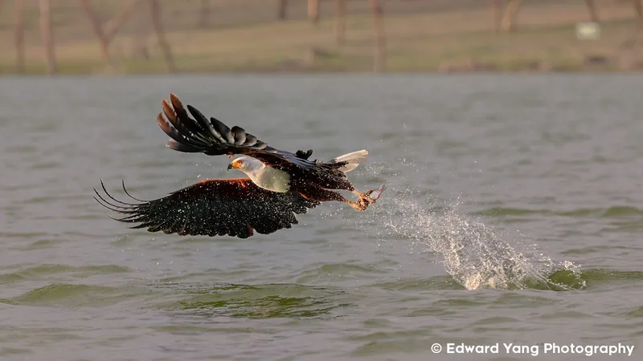

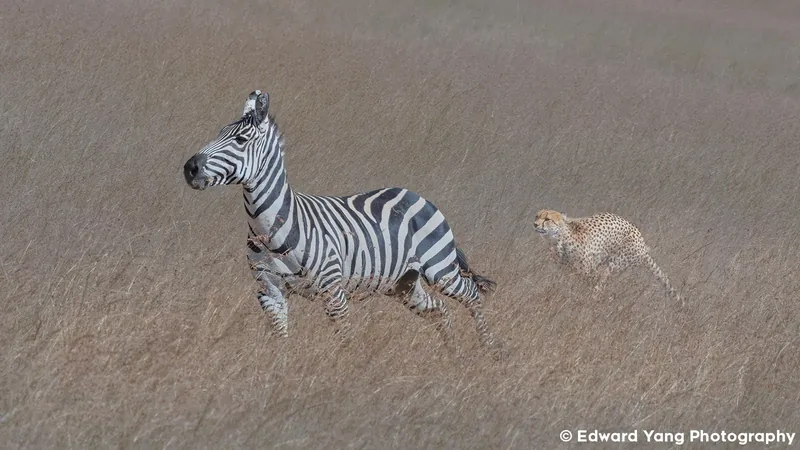
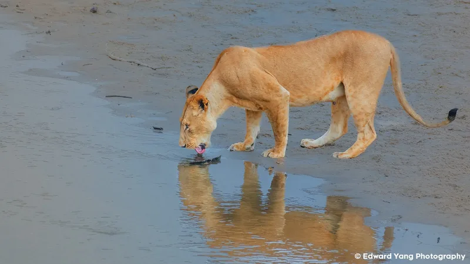
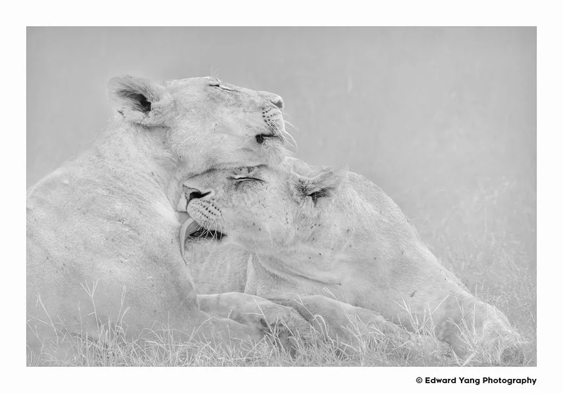

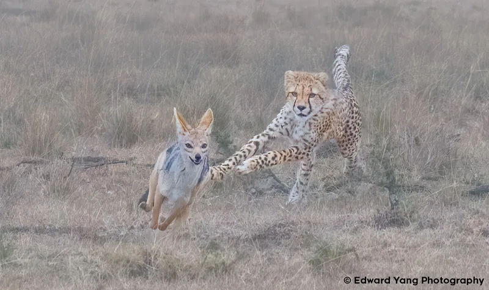
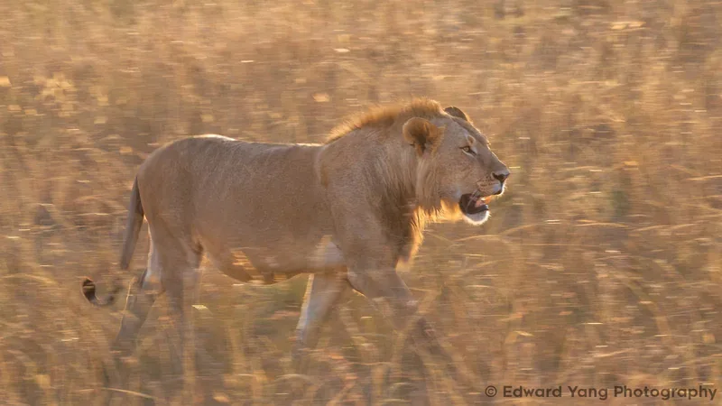
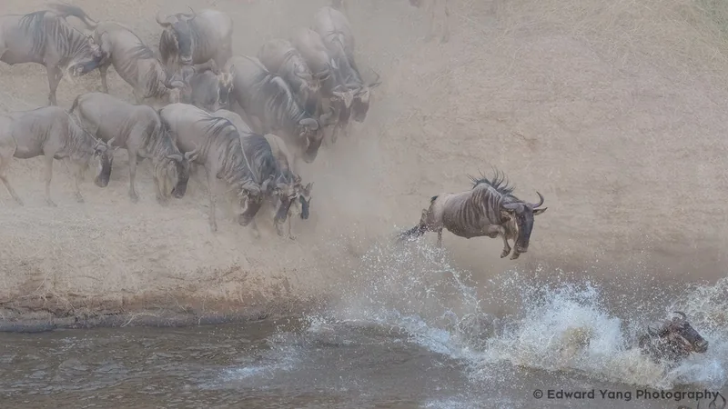
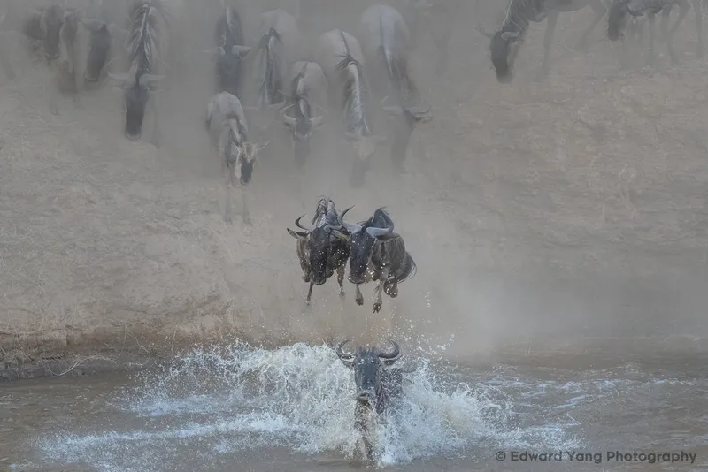
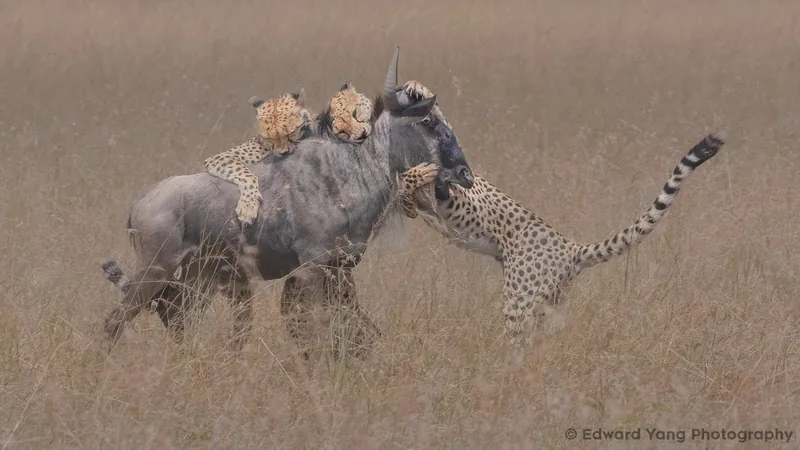
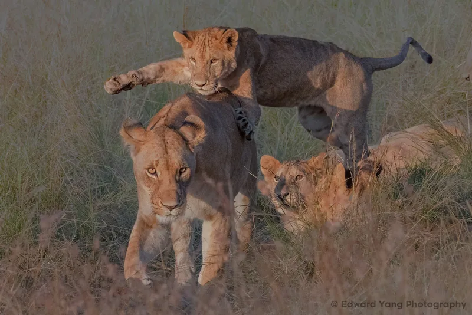
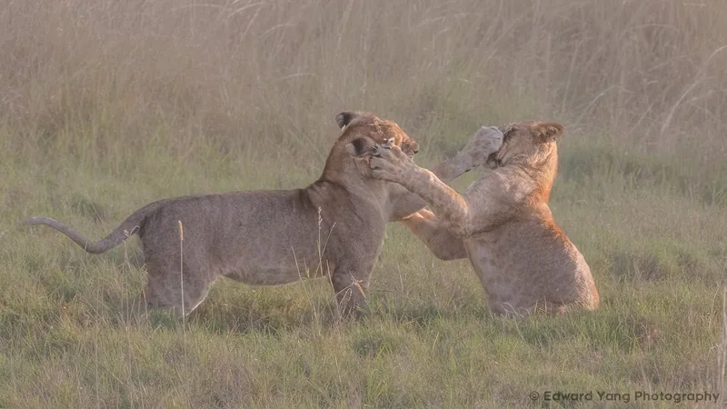
Overall, this trip was incredible, and I got some amazing shots and experienced a safari for the first time. It was incredible being so close to the action, watching the cold hard reality of nature as apex predators devoured the zebras and wildebeests alive.